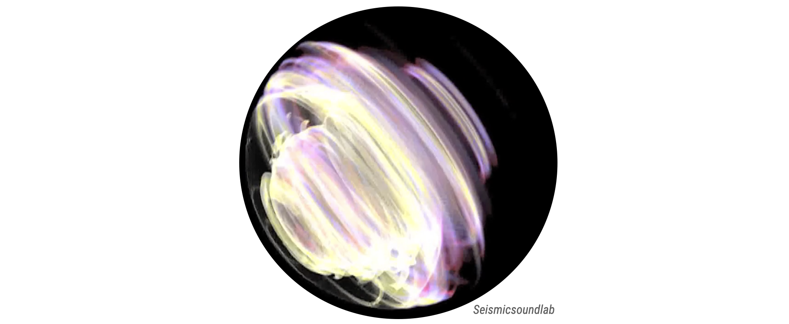

Exploring seismic processes through sound
Collaborators: Ben Holtzman (MIT / Columbia),
Arthur Paté (Junia),
the Seismic Sound Lab,
Matthew Packwood (Oregon Origins Project)
Associated publications:
Paté et al. (2021).

Very early on in modern seismology research, seismograms were turned into sound (sonified) as an illustrative or exploration tool to highlight the intricate structure of seismic signals. Following this tradition, I have been practicing sonification to find new ways to explore seismic data (Paté et al., 2021) and to discover intuitive ways to communicate complex scientific concepts to a classroom or a broad audience (check my Freesound).